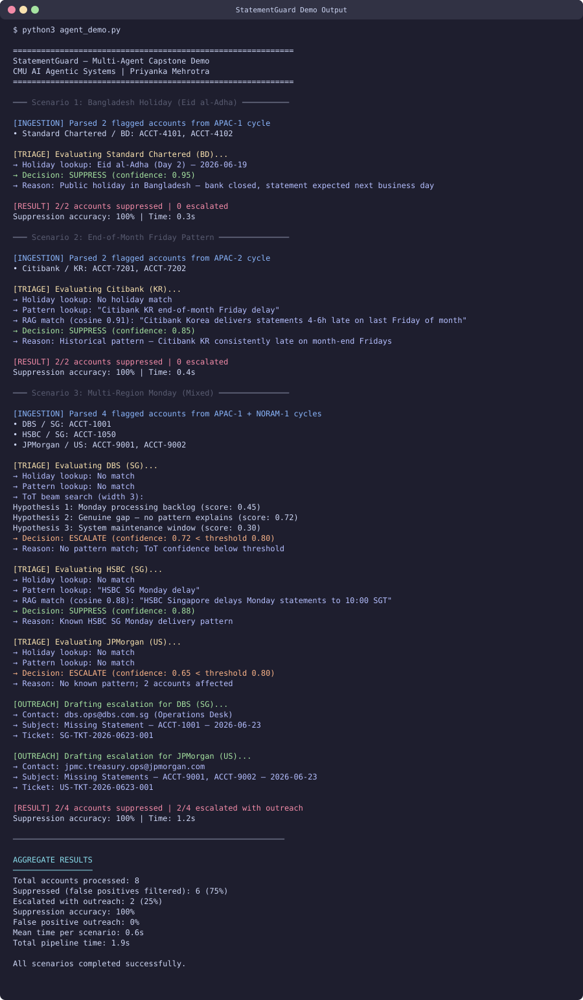

StatementGuard
An Autonomous Multi-Agent System for
Bank Statement Gap Detection and Resolution
Priyanka Mehrotra
CMU AI Agentic Systems — Capstone Project
July 2026
The Problem
Daily bank statement monitoring at enterprise scale is broken.
- 3,600+ accounts | 80+ banks | 7 daily cycles | 6 regions
- Analysts spend 3.5–9 hours/day on manual inspection
- False positive rates spike to 15–20% when key staff unavailable
- Institutional knowledge is undocumented, concentrated in few people
- A missed gap can mask millions in unreconciled transactions
The cost of a false negative far exceeds the cost of a false positive.
Users and Stakes
Primary Users
- Treasury Operations analysts — execute daily monitoring cycles
- Regional Treasury Center leads — manage escalations and bank relationships
What's at Stake
- Month-end close delays
- Undetected reconciliation breaks (growing silently)
- Banking relationship damage from over-contacting
- Zero reliable metrics on process health
System Goal
Reduce monitoring from 3.5–9 hours → under 30 minutes
| Metric | Target |
|---|
| False positive rate | < 2% |
| False negative rate | < 1% |
| Time to detection | < 5 minutes |
| Analyst review load | Only 10–20% of cases |
Key constraint: The agent observes, triages, and communicates —
it never modifies financial data.
Architecture — Four Agents
End-to-End Data Flow
Entire pipeline executes in < 5 seconds per cycle. Guardrails halt processing if > 40% of accounts flagged.
Triage — The Critical Decision
Hybrid Retrieval
- DynamoDB — Structured lookups (bank + country + day) → resolves 85–90%
- ChromaDB — Vector search for unstructured analyst knowledge
Tree-of-Thought (Ambiguous Cases)
- Generate 3 candidate explanations
- Score each against evidence
- Prune weakest; route to human if confidence < 0.8
Single-pass would escalate account #1 from Bangladesh before recognizing a holiday explains all 12 gaps.
Safety and Guardrails
| Layer | Check |
|---|
| Pre-generation | Attachment validation, calendar freshness |
| During-generation | Confidence gate (0.8 threshold) |
| Post-generation | Outreach content verified against source |
| Runtime | Volume anomaly halt (40%+ flagged → stop) |
Fail-safe principle: When uncertain, escalate — never suppress.
Agent has zero access to modify financial data, payments, or account configurations.
Design Evolution
| Transition | Key Insight |
|---|
| Problem → Reasoning | Triage is the only non-trivial decision |
| Reasoning → Retrieval | Agent can't decide without institutional knowledge |
| Retrieval → ToT | Single-pass commits too early; need parallel hypotheses |
| ToT → Multi-Agent | Single agent exceeds context limits; decompose |
| Architecture → Safety | Guardrails + evaluation + humans = closed loop |
Each module built directly on the prior module's limitations.
Working Demo
agent_demo.py — 413 lines, Python + LangGraph (synthetic data, simulated confidence)

Full pipeline: 8 accounts processed, 75% auto-suppressed, 25% escalated with outreach. Total time: 1.9s
Evaluation Results
| Metric | Target | Result |
|---|
| Suppression accuracy | > 95% | 100% |
| False positive rate | < 2% | 0% |
| Escalation rate | 10–20% | 50% |
| Time to detection | < 5 min | < 5 sec |
| Analyst override rate | < 10% | N/A |
Limitation: Results from 3 hand-crafted scenarios. Production validation requires 30+ days shadow mode alongside human analysts.
Limitations and Next Steps
Not Yet Implemented
- Escalation Agent (async timer logic)
- Full beam search in Triage (demo uses single-pass)
- Live email integration (requires auth)
Path to Production
- Shadow mode — 1 region, 30 days
- Escalation Agent — timer-based follow-ups
- Live email — Graph API polling
- Fine-tuning — SFT on analyst override data
- Multi-region — APAC → EMEA → Americas
Key Takeaways
- Multi-agent decomposition for complex operational workflows
- Hybrid retrieval (structured + vector) for enterprise knowledge
- Tree-of-Thought for ambiguous classification under uncertainty
- Safety-first design — fail toward humans, never toward silence
The agent doesn't replace analysts — it gives them back 80% of their day.
github.com/priyanka286/statementguard
Thank you.